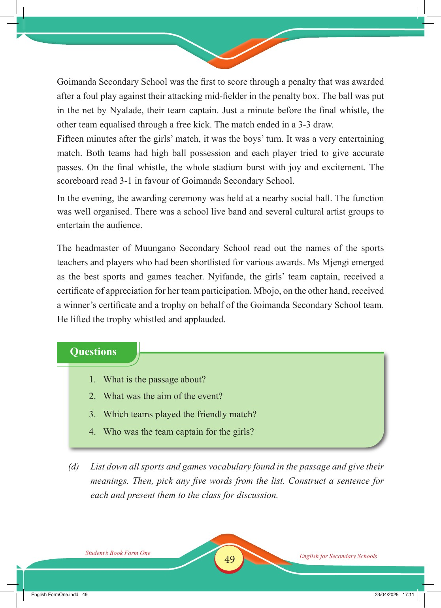

Accessible text transcript - page 49
Use the reader's read-aloud controls or select an individual segment below.
Printed book page 49. Goimanda Secondary School was the first to score through a penalty that was awarded after a foul play against their attacking mid-fielder in the penalty box. The ball was put in the net by Nyalade, their team captain. Just a minute before the final whistle, the other team equalised through a free kick. The match ended in a 3-3 draw. Fifteen minutes after the girls’ match, it was the boys’ turn. It was a very entertaining match. Both teams had high ball possession and each player tried to give accurate passes. On the final whistle, the whole stadium burst with joy and excitement. The scoreboard read 3-1 in favour of Goimanda Secondary School. In the evening, the awarding ceremony was held at a nearby social hall. The function was well organised. There was a school live band and several cultural artist groups to entertain the audience. The headmaster of Muungano Secondary School read out the names of the sports teachers and players who had been shortlisted for various awards. Ms Mjengi emerged as the best sports and games teacher. Nyifande, the girls’ team captain, received a certificate of appreciation for her team participation. Mbojo, on the other hand, received a winner’s certificate and a trophy on behalf of the Goimanda Secondary School team. He lifted the trophy whistled and applauded. (d) List down all sports and games vocabulary found in the passage and give their meanings. Then, pick any five words from the list. Construct a sentence for each and present them to the class for discussion. Questions box with four comprehension questions about the passage: what it is about, the aim of the event, which teams played the friendly match, and who the girls’ team captain was. Questions 1. What is the passage about? 2. What was the aim of the event? 3. Which teams played the friendly match? 4. Who was the team captain for the girls? Return to the page image